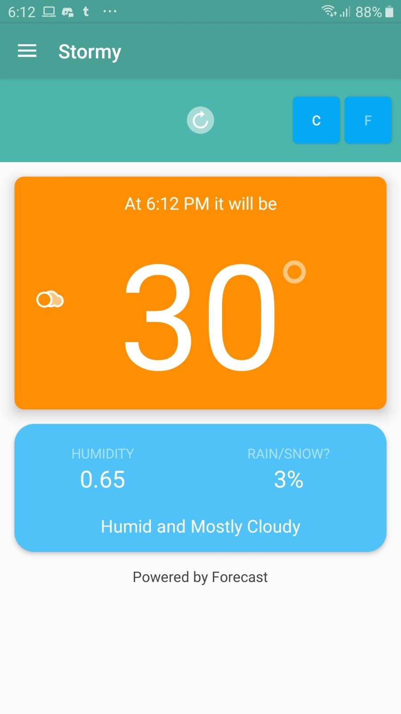

Stormy
Stormy is the most accurate source of hyperlocal weather information. With down-to-the-minute forecasts, you’ll know exactly when the rain will start or stop, right where you're standing. It's almost like magic.Powered by the most used weather service API, Dark Sky is the best source of accurate weather forecasts to help you plan your life.

